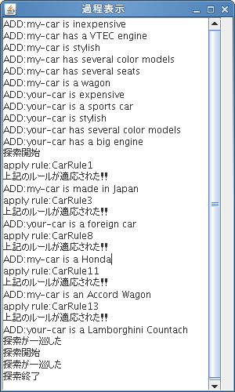

前向き推論は事実からルールを用いて、ある事柄が成り立つかどうかを確かめる方法であり、後ろ向き推論はルールを用いて、ある事柄が成り立つために必要な事実があるかどうかを調べ、その事柄が成り立つかどうか確かめる方法である。
詳細は担当者のレポート
sotuken.data
プログラムの構造
クラスWarking Memory
ワーキングメモリを表すクラス
- matchingAssertions
マッチするアサーションに対するバインディング情報を返す。
- matchable
メソッドmatchingAssertionsの中身、すべての質問文とアサーションとのマッチングをメソッドmatchingを用いて行っている。
- addAssertion
アサーションをワーキングメモリに加える。
- contains
指定されたアサーションがすでに含まれているか調べる。
- toString
ワーキングメモリの内容をストリングとして返す。
クラスRuleBase
ルールベースを表すクラス
- RuleBase
ルールベースのファイルの指定、ルールの読み取り、アサーションの追加を行う。
- StringRead
ルールファイル名、アサーション、質問文の入力を取り扱う、場合わけは引数のフラグを用いている。
- forwardChain
前向き推論を行うメソッド。
- instantiate
変数を含む後件の変数が具体化できるなら、具体化した文に置き換える。
具体化できないなら、変数のままにする。
- var
与えられたトークンが変数であるかを調べる。
- loadRules
ルールベースの文章をルールの形式に読み取り、生成する。
クラスRule
ルールを表すクラス
- Rule
インスタンスに引数のルールを設定する。
- getName
ルールの名前を返す。
- toString
ルールをString形式で返す。
- getAntecedents
ルールの前件を返す。
- getConsequent
ルールの後件を返す。
クラスMatcher
マッチングを扱うクラス
- Matcher
ハッシュマップの初期化。
- matching
文をトークンに分解してマッチングをする。
- tokenMatching
トークンのマッチングを行う
- varMatching
変数のトークンのマッチングを行う
- var
与えられたトークンが変数であるかを調べる。
実装の説明
メソッドRuleBase、StringRead、forwardChainにおいてコンソールからルールベースファイル名、アサーションの追加、質問文の入力を行えるようにした。
メソッドinstatiateにおいて、後件の変数が具体化されない場合は変更をしないように処理を追加した。
メソッドvarMatchingにおいて、質疑応答システムを追加したことにより変更を加えた。質問文とアサーションのマッチングでは変数束縛を行わないように処理を追加した。
詳細は担当者のレポート
実行例
以下に卒研配属に関する事例の前向き推論による質疑応答システムの例を示す。
ルールファイル名を入力してください。
例:CarShop.data
->sotuken.data
追加するアサーションを入力してください。
例:my-car is inexpensive
終了するならexitを入力してください。
->Shimano wants to study AI
ADD:Shimano wants to study AI
追加するアサーションを入力してください。
例:my-car is inexpensive
終了するならexitを入力してください。
->Shimano wants to study Robot
ADD:Shimano wants to study Robot
追加するアサーションを入力してください。
例:my-car is inexpensive
終了するならexitを入力してください。
->Shimano wants to study Multi agent
ADD:Shimano wants to study Multi agent
追加するアサーションを入力してください。
例:my-car is inexpensive
終了するならexitを入力してください。
->exit
34
34
LabRule1 [?x wants to study AI]->?x wants to study Machine learning
LabRule1.1 [?x wants to study AI]->?x wants to study Multi agent
LabRule1.2 [?x wants to study AI]->?x wants to study Natural language processing
LabRule2 [?x wants to study Hardware]->?x wants to study Compiler
LabRule2.1 [?x wants to study Hardware]->?x wants to study Robot
LabRule3 [?x wants to study Media]->?x wants to study Image information processing
LabRule3.1 [?x wants to study Media]->?x wants to study Speech information processing
LabRule4 [?x wants to study Robot, ?x wants to study Image information processing]->Nakamura-Lab is recommended for ?x
LabRule5 [?x wants to study Data mining, ?x wants to study Logic]->Inuzuka-Lab is recommended for ?x
LabRule6 [?x wants to study Algorithm, ?x wants to study AI]->Moriyama-Lab is recommended for ?x
LabRule7 [?x wants to study Image information processing]->Hontani-Lab is recommended for ?x
LabRule8 [?x wants to study Media, ?x wants to study Robot]->Umezaki-Lab is recommended for ?x
LabRule9 [?x wants to study Image information processing]->Satou-Lab is recommended for ?x
LabRule10 [?x wants to study Speech information processing]->Tokuda-Lab is recommended for ?x
LabRule11 [?x wants to study Speech information processing]->Tokuda-Lab is recommended for ?x
LabRule11.1 [?x wants to study Speech information processing]->Ri-Lab is recommended for ?x
LabRule12 [?x wants to study others]->Oda-Lab is recommended for ?x
LabRule13 [?x wants to study Image information processing]->Hunahasi-Lab is recommended for ?x
LabRule14 [?x wants to study Algorithm, ?x wants to study distributed system]->Katayama-Lab is recommended for ?x
LabRule15 [?x wants to study Security]->Saitou-Lab is recommended for ?x
LabRule16 [?x wants to study Natural language processing, ?x wants to study Logic]->Wadayama-Lab is recommended for ?x
LabRule17 [?x wants to study Algorithm, ?x wants to study distributed system, ?x wants to study Robot]->Izumi-Lab is recommended for ?x
LabRule18 [?x wants to study Network]->Itou(yoshi)-Lab is recommended for ?x
LabRule19 [?x wants to study GPS]->Uchiya(takumi)-Lab is recommended for ?x
LabRule20 [?x wants to study Secrity, ?x wants to study AI, ?x wants to study Multi agent]->Uchiya-Lab is recommended for ?x
LabRule21 [?x wants to study Hardware]->Tumura-Lab is recommended for ?x
LabRule22 [?x wants to study AI]->Shintani(Ozono)-Lab is recommended for ?x
LabRule23 [?x wants to study Image information processing, ?x wants to study programming language]->Hukusima-Lab is recommended for ?x
LabRule24 [?x wants to study Multi agent]->Itou(taka)-Lab is recommended for ?x
LabRule25 [?x wants to study Robot]->Katou-Lab is recommended for ?x
LabRule26 [?x wants to study natural language processing]->Shiramatu-Lab is recommended for ?x
LabRule27 [?x wants to study brain]->Hunase-Lab is recommended for ?x
LabRule28 [?x wants to study math]->Adachi-Lab is recommended for ?x
LabRule28.1 [?x wants to study math]->Mizusawa-Lab is recommended for ?x
LabRule28.2 [?x wants to study math]->Yamagishi-Lab is recommended for ?x
LabRule28.3 [?x wants to study math]->Matuzoe-Lab is recommended for ?x
LabRule29 [?x wants to study Network]->Nunome-Lab is recommended for ?x
LabRule30 [?x wants to study Network, ?x wants to study distributed system]->Matuo-Lab is recommended for ?x
LabRule31 [?x wants to study AI, ?x wants to study Logic]->Seki-Lab is recommended for ?x
LabRule32 [?x wants to study Machine learning, ?x wants to study Data mining]->Takeuchi-Lab is recommended for ?x
LabRule33 [?x wants to study Muti agent, ?x wants to study distributed system]->Matui-Lab is recommended for ?x
LabRule34 [?x wants to study GPS, ?x wants to study Robot]->Yamamoto-Lab is recommended for ?x
LabRule35 [?x wants to study Speech information processing]->Yamamoto-Lab is recommended for ?x
LabRule36 [?x wants to study Robot]->Ishibashi-Lab is recommended for ?x
apply rule:LabRule1
Success: Shimano wants to study Machine learning
ADD:Shimano wants to study Machine learning
apply rule:LabRule1.1
apply rule:LabRule1.2
Success: Shimano wants to study Natural language processing
ADD:Shimano wants to study Natural language processing
apply rule:LabRule2
apply rule:LabRule2.1
apply rule:LabRule3
apply rule:LabRule3.1
apply rule:LabRule4
apply rule:LabRule5
apply rule:LabRule6
apply rule:LabRule7
apply rule:LabRule8
apply rule:LabRule9
apply rule:LabRule10
apply rule:LabRule11
apply rule:LabRule11.1
apply rule:LabRule12
apply rule:LabRule13
apply rule:LabRule14
apply rule:LabRule15
apply rule:LabRule16
apply rule:LabRule17
apply rule:LabRule18
apply rule:LabRule19
apply rule:LabRule20
apply rule:LabRule21
apply rule:LabRule22
Success: Shintani(Ozono)-Lab is recommended for Shimano
ADD:Shintani(Ozono)-Lab is recommended for Shimano
apply rule:LabRule23
apply rule:LabRule24
Success: Itou(taka)-Lab is recommended for Shimano
ADD:Itou(taka)-Lab is recommended for Shimano
apply rule:LabRule25
Success: Katou-Lab is recommended for Shimano
ADD:Katou-Lab is recommended for Shimano
apply rule:LabRule26
apply rule:LabRule27
apply rule:LabRule28
apply rule:LabRule28.1
apply rule:LabRule28.2
apply rule:LabRule28.3
apply rule:LabRule29
apply rule:LabRule30
apply rule:LabRule31
apply rule:LabRule32
apply rule:LabRule33
apply rule:LabRule34
apply rule:LabRule35
apply rule:LabRule36
Success: Ishibashi-Lab is recommended for Shimano
ADD:Ishibashi-Lab is recommended for Shimano
Working Memory[Shimano wants to study AI, Shimano wants to study Robot, Shimano wants to study Multi agent, Shimano wants to study Machine learning, Shimano wants to study Natural language processing, Shintani(Ozono)-Lab is recommended for Shimano, Itou(taka)-Lab is recommended for Shimano, Katou-Lab is recommended for Shimano, Ishibashi-Lab is recommended for Shimano]
apply rule:LabRule1
apply rule:LabRule1.1
apply rule:LabRule1.2
apply rule:LabRule2
apply rule:LabRule2.1
apply rule:LabRule3
apply rule:LabRule3.1
apply rule:LabRule4
apply rule:LabRule5
apply rule:LabRule6
apply rule:LabRule7
apply rule:LabRule8
apply rule:LabRule9
apply rule:LabRule10
apply rule:LabRule11
apply rule:LabRule11.1
apply rule:LabRule12
apply rule:LabRule13
apply rule:LabRule14
apply rule:LabRule15
apply rule:LabRule16
apply rule:LabRule17
apply rule:LabRule18
apply rule:LabRule19
apply rule:LabRule20
apply rule:LabRule21
apply rule:LabRule22
apply rule:LabRule23
apply rule:LabRule24
apply rule:LabRule25
apply rule:LabRule26
apply rule:LabRule27
apply rule:LabRule28
apply rule:LabRule28.1
apply rule:LabRule28.2
apply rule:LabRule28.3
apply rule:LabRule29
apply rule:LabRule30
apply rule:LabRule31
apply rule:LabRule32
apply rule:LabRule33
apply rule:LabRule34
apply rule:LabRule35
apply rule:LabRule36
Working Memory[Shimano wants to study AI, Shimano wants to study Robot, Shimano wants to study Multi agent, Shimano wants to study Machine learning, Shimano wants to study Natural language processing, Shintani(Ozono)-Lab is recommended for Shimano, Itou(taka)-Lab is recommended for Shimano, Katou-Lab is recommended for Shimano, Ishibashi-Lab is recommended for Shimano]
No rule produces a new assertion
質問文を1行づつ入力してください。
例:?x is a ?y
すべての質問文を入力したらexitを入力してください。
->?x is recommended for Shimano
質問文を1行づつ入力してください。
例:?x is a ?y
すべての質問文を入力したらexitを入力してください。
->exit
Query[?x is recommended for Shimano]
Answer[{?x=Shintani(Ozono)-Lab}, {?x=Itou(taka)-Lab}, {?x=Katou-Lab}, {?x=Ishibashi-Lab}]
課題6-2(後ろ向き推論)
CarShop.data , AnimalWorld.data 等のデータファイルを実際的な応用事例に書き換えて，前向き推論，および後ろ向き推論に基づく質問応答システムを作成せよ．
どのような応用事例を扱うかは，メンバーで話し合って決めること．
なお，ユーザの質問は英語や日本語のような自然言語が望ましいが，難しければ変数を含むパターン等でも構わない．
独自仕様の説明
課題に加えて，以下の二点を独自仕様として組み込んだ
- ルールファイル名を入力したときにワーキングメモリのファイルも自動的に読み込む設定とした。
- GUIを実装する人が実装しやすいように処理をある程度のメソッド化した
1.に関して，ユーザーがルールファイル名を入力すると、そのワーキングメモリファイルも読み込む仕様とした。 ただし、ワーキングメモリのファイル名が"ルールファイル名Wm"となっていなければ読み込めない。
2.に関しては，GUI実装担当が実装をしやすいように処理をメソッドでまとめた。
プログラムの構造
クラスRuleBaseSystem
メインクラス
クラスRuleBase
ルールを表すクラス
クラスFileManager
ファイルを扱うクラス
- loadRules
ルールベースファイルからルールの形式で読み取る。
- loadWm
アサーションファイルを読み取る。
クラスRule
ルールを表すクラス。
前向き推論のクラスRuleとほぼ同様。
クラスUnifer
ユニフィケーションを扱うクラス
- unify(3変数)
初期束縛変数をもつユニフィケーションを行う。失敗したとき束縛変数を初期値に戻す。
- unify(2変数)
ユニフィケーションを行う。
- tokenMatching
トークンのマッチングを行う
- varMatching
変数のトークンのマッチングを行う
- replaceBuffer
配列中に存在する同じ名前の変数をすべて定数に置き換える。
- replaceBindings
変数をキーとして変数がハッシュテーブルに格納されていた場合、変数の具体化をすべての変数に適用する。
- var
与えられたトークンが変数であるかを調べる。
実装の説明
ルールベースファイルに対応したアサーションファイルを自動的に読み込むメソッドfilereaderを追加した。
質問文をコンソールから読み込むメソッドrulereaderを追加した。
課題6-3用にGuiで用いるメソッドGuiSetUp,readfileWm,getAnswer,getChainPath,exeを作成した。
詳細は担当者のレポート
実行例
以下に卒研配属に関する事例の前向き推論による質疑応答システムの例を示す。
Kodai wants to study AI
Ryota wants to study AI
Kenta wants to study AI
Daisuke wants to study AI
Tomomichi wants to study AI
ルールファイル名を入力してください
例:CarShop.data
sotuken.data
質問文を入力してください
例:?x is an Accord Wagon,?x is a Honda
?x is recommended for Kodai,?y is recommended for Ryota
Hypothesis:[?x is recommended for Kodai, ?y is recommended for Ryota]
Success RULE
Rule:LabRule4 [?x7 wants to study Robot, ?x7 wants to study Image information processing]->Nakamura-Lab is recommended for ?x7 <=> ?x is recommended for Kodai
Success RULE
Rule:LabRule2.1 [?x12 wants to study Hardware]->?x12 wants to study Robot <=> ?x7 wants to study Robot
tmpPoint: -1
Success RULE
Rule:LabRule5 [?x96 wants to study Data mining, ?x96 wants to study Logic]->Inuzuka-Lab is recommended for ?x96 <=> ?x is recommended for Kodai
tmpPoint: -1
Success RULE
Rule:LabRule6 [?x141 wants to study Algorithm, ?x141 wants to study AI]->Moriyama-Lab is recommended for ?x141 <=> ?x is recommended for Kodai
tmpPoint: -1
Success RULE
Rule:LabRule7 [?x186 wants to study Image information processing]->Hontani-Lab is recommended for ?x186 <=> ?x is recommended for Kodai
Success RULE
Rule:LabRule3 [?x192 wants to study Media]->?x192 wants to study Image information processing <=> ?x186 wants to study Image information processing
Success RULE
Rule:LabRule8 [?x275 wants to study Media, ?x275 wants to study Robot]->Umezaki-Lab is recommended for ?x275 <=> ?x is recommended for Kodai
tmpPoint: -1
Success RULE
Rule:LabRule9 [?x320 wants to study Image information processing]->Satou-Lab is recommended for ?x320 <=> ?x is recommended for Kodai
Success RULE
Rule:LabRule3 [?x326 wants to study Media]->?x326 wants to study Image information processing <=> ?x320 wants to study Image information processing
Success RULE
Rule:LabRule10 [?x409 wants to study Speech information processing]->Tokuda-Lab is recommended for ?x409 <=> ?x is recommended for Kodai
Success RULE
Rule:LabRule3.1 [?x416 wants to study Media]->?x416 wants to study Speech information processing <=> ?x409 wants to study Speech information processing
Success RULE
Rule:LabRule11 [?x498 wants to study Speech information processing]->Tokuda-Lab is recommended for ?x498 <=> ?x is recommended for Kodai
Success RULE
Rule:LabRule3.1 [?x505 wants to study Media]->?x505 wants to study Speech information processing <=> ?x498 wants to study Speech information processing
Success RULE
Rule:LabRule11.1 [?x587 wants to study Speech information processing]->Ri-Lab is recommended for ?x587 <=> ?x is recommended for Kodai
Success RULE
Rule:LabRule3.1 [?x594 wants to study Media]->?x594 wants to study Speech information processing <=> ?x587 wants to study Speech information processing
Success RULE
Rule:LabRule12 [?x676 wants to study others]->Oda-Lab is recommended for ?x676 <=> ?x is recommended for Kodai
Success RULE
Rule:LabRule13 [?x721 wants to study Image information processing]->Hunahasi-Lab is recommended for ?x721 <=> ?x is recommended for Kodai
Success RULE
Rule:LabRule3 [?x727 wants to study Media]->?x727 wants to study Image information processing <=> ?x721 wants to study Image information processing
Success RULE
Rule:LabRule14 [?x810 wants to study Algorithm, ?x810 wants to study distributed system]->Katayama-Lab is recommended for ?x810 <=> ?x is recommended for Kodai
tmpPoint: -1
Success RULE
Rule:LabRule15 [?x855 wants to study Security]->Saitou-Lab is recommended for ?x855 <=> ?x is recommended for Kodai
Success RULE
Rule:LabRule16 [?x900 wants to study Natural language processing, ?x900 wants to study Logic]->Wadayama-Lab is recommended for ?x900 <=> ?x is recommended for Kodai
Success RULE
Rule:LabRule1.2 [?x903 wants to study AI]->?x903 wants to study Natural language processing <=> ?x900 wants to study Natural language processing
Success WM
Kodai wants to study AI <=> ?x903 wants to study AI
tmpPoint: 8
Success:?x900 wants to study Natural language processing
tmpPoint: -1
Success RULE
Rule:LabRule17 [?x984 wants to study Algorithm, ?x984 wants to study distributed system, ?x984 wants to study Robot]->Izumi-Lab is recommended for ?x984 <=> ?x is recommended for Kodai
tmpPoint: -1
Success RULE
Rule:LabRule18 [?x1029 wants to study Network]->Itou(yoshi)-Lab is recommended for ?x1029 <=> ?x is recommended for Kodai
Success RULE
Rule:LabRule19 [?x1074 wants to study GPS]->Uchiya(takumi)-Lab is recommended for ?x1074 <=> ?x is recommended for Kodai
Success RULE
Rule:LabRule20 [?x1119 wants to study Secrity, ?x1119 wants to study AI, ?x1119 wants to study Multi agent]->Uchiya-Lab is recommended for ?x1119 <=> ?x is recommended for Kodai
tmpPoint: -1
Success RULE
Rule:LabRule21 [?x1164 wants to study Hardware]->Tumura-Lab is recommended for ?x1164 <=> ?x is recommended for Kodai
Success RULE
Rule:LabRule22 [?x1209 wants to study AI]->Shintani(Ozono)-Lab is recommended for ?x1209 <=> ?x is recommended for Kodai
Success WM
Kodai wants to study AI <=> ?x1209 wants to study AI
tmpPoint: 32
Success:?x is recommended for Kodai
Success RULE
Rule:LabRule4 [?x1217 wants to study Robot, ?x1217 wants to study Image information processing]->Nakamura-Lab is recommended for ?x1217 <=> ?y is recommended for Ryota
Success RULE
Rule:LabRule2.1 [?x1222 wants to study Hardware]->?x1222 wants to study Robot <=> ?x1217 wants to study Robot
tmpPoint: -1
Success RULE
Rule:LabRule5 [?x1306 wants to study Data mining, ?x1306 wants to study Logic]->Inuzuka-Lab is recommended for ?x1306 <=> ?y is recommended for Ryota
tmpPoint: -1
Success RULE
Rule:LabRule6 [?x1351 wants to study Algorithm, ?x1351 wants to study AI]->Moriyama-Lab is recommended for ?x1351 <=> ?y is recommended for Ryota
tmpPoint: -1
Success RULE
Rule:LabRule7 [?x1396 wants to study Image information processing]->Hontani-Lab is recommended for ?x1396 <=> ?y is recommended for Ryota
Success RULE
Rule:LabRule3 [?x1402 wants to study Media]->?x1402 wants to study Image information processing <=> ?x1396 wants to study Image information processing
Success RULE
Rule:LabRule8 [?x1485 wants to study Media, ?x1485 wants to study Robot]->Umezaki-Lab is recommended for ?x1485 <=> ?y is recommended for Ryota
tmpPoint: -1
Success RULE
Rule:LabRule9 [?x1530 wants to study Image information processing]->Satou-Lab is recommended for ?x1530 <=> ?y is recommended for Ryota
Success RULE
Rule:LabRule3 [?x1536 wants to study Media]->?x1536 wants to study Image information processing <=> ?x1530 wants to study Image information processing
Success RULE
Rule:LabRule10 [?x1619 wants to study Speech information processing]->Tokuda-Lab is recommended for ?x1619 <=> ?y is recommended for Ryota
Success RULE
Rule:LabRule3.1 [?x1626 wants to study Media]->?x1626 wants to study Speech information processing <=> ?x1619 wants to study Speech information processing
Success RULE
Rule:LabRule11 [?x1708 wants to study Speech information processing]->Tokuda-Lab is recommended for ?x1708 <=> ?y is recommended for Ryota
Success RULE
Rule:LabRule3.1 [?x1715 wants to study Media]->?x1715 wants to study Speech information processing <=> ?x1708 wants to study Speech information processing
Success RULE
Rule:LabRule11.1 [?x1797 wants to study Speech information processing]->Ri-Lab is recommended for ?x1797 <=> ?y is recommended for Ryota
Success RULE
Rule:LabRule3.1 [?x1804 wants to study Media]->?x1804 wants to study Speech information processing <=> ?x1797 wants to study Speech information processing
Success RULE
Rule:LabRule12 [?x1886 wants to study others]->Oda-Lab is recommended for ?x1886 <=> ?y is recommended for Ryota
Success RULE
Rule:LabRule13 [?x1931 wants to study Image information processing]->Hunahasi-Lab is recommended for ?x1931 <=> ?y is recommended for Ryota
Success RULE
Rule:LabRule3 [?x1937 wants to study Media]->?x1937 wants to study Image information processing <=> ?x1931 wants to study Image information processing
Success RULE
Rule:LabRule14 [?x2020 wants to study Algorithm, ?x2020 wants to study distributed system]->Katayama-Lab is recommended for ?x2020 <=> ?y is recommended for Ryota
tmpPoint: -1
Success RULE
Rule:LabRule15 [?x2065 wants to study Security]->Saitou-Lab is recommended for ?x2065 <=> ?y is recommended for Ryota
Success RULE
Rule:LabRule16 [?x2110 wants to study Natural language processing, ?x2110 wants to study Logic]->Wadayama-Lab is recommended for ?x2110 <=> ?y is recommended for Ryota
Success RULE
Rule:LabRule1.2 [?x2113 wants to study AI]->?x2113 wants to study Natural language processing <=> ?x2110 wants to study Natural language processing
Success WM
Ryota wants to study AI <=> ?x2113 wants to study AI
tmpPoint: 8
Success:?x2110 wants to study Natural language processing
tmpPoint: -1
Success RULE
Rule:LabRule17 [?x2194 wants to study Algorithm, ?x2194 wants to study distributed system, ?x2194 wants to study Robot]->Izumi-Lab is recommended for ?x2194 <=> ?y is recommended for Ryota
tmpPoint: -1
Success RULE
Rule:LabRule18 [?x2239 wants to study Network]->Itou(yoshi)-Lab is recommended for ?x2239 <=> ?y is recommended for Ryota
Success RULE
Rule:LabRule19 [?x2284 wants to study GPS]->Uchiya(takumi)-Lab is recommended for ?x2284 <=> ?y is recommended for Ryota
Success RULE
Rule:LabRule20 [?x2329 wants to study Secrity, ?x2329 wants to study AI, ?x2329 wants to study Multi agent]->Uchiya-Lab is recommended for ?x2329 <=> ?y is recommended for Ryota
tmpPoint: -1
Success RULE
Rule:LabRule21 [?x2374 wants to study Hardware]->Tumura-Lab is recommended for ?x2374 <=> ?y is recommended for Ryota
Success RULE
Rule:LabRule22 [?x2419 wants to study AI]->Shintani(Ozono)-Lab is recommended for ?x2419 <=> ?y is recommended for Ryota
Success WM
Ryota wants to study AI <=> ?x2419 wants to study AI
Yes
{?x1209=Kodai, ?x2419=Ryota, ?x=Shintani(Ozono)-Lab, ?y=Shintani(Ozono)-Lab}
binding: {?x1209=Kodai, ?x2419=Ryota, ?x=Shintani(Ozono)-Lab, ?y=Shintani(Ozono)-Lab}
tmp: ?x, result: Shintani(Ozono)-Lab
Query: ?x is recommended for Kodai
Answer:Shintani(Ozono)-Lab is recommended for Kodai
binding: {?x1209=Kodai, ?x2419=Ryota, ?x=Shintani(Ozono)-Lab, ?y=Shintani(Ozono)-Lab}
tmp: ?y, result: Shintani(Ozono)-Lab
Query: ?y is recommended for Ryota
Answer:Shintani(Ozono)-Lab is recommended for Ryota
課題6-3(前向き推論)
上記6-2で実装した質疑応答システムのGUIを作成せよ。
質問に答える際の推論過程を可視化できることが望ましい。
プログラムの構造
課題6-2で作成した質疑応答システムのプログラムに追加、変更することで実装した。
追加部分の説明を行う。
クラスLaterFrame
過程用フレームを扱うクラス。
- LaterFrame
過程用のフレームを作成する。
クラスDoFrame
実行用のフレームを扱うクラス
- DoFrame
実行用のフレームを作成する。
- actionPerformed
入力に対する処理を行う。
クラスDeleteFrame
ルール削除用のフレームを扱うクラス
- DeleteFrame
ルール削除用のフレームを作成する。
- actionPerformed
入力に対する処理を行う。
クラスAddFrame
ルールの追加を行うフレームを扱うクラス
- AddFrame
ルールを追加するフレームを作成する。
- actionPerformed
入力に対する処理を行う。
クラスPrefFrame
メインのフレームを扱うクラス
- PreFrame
メインのフレームを作成する。
- actionPerformed
入力に対する処理を行う。
クラスRuleBaseSystem
メインクラス
実装の説明
doボタンを押した場合は通常実行を行うためのDoFrameを呼び出し、ルールファイル、アサーション、質問文(クエリー)の入力を行う。
質問の解はDoFrame内に表示させる。
printボタンを押した場合はアサーション一覧,ルール一覧,また探索までの大雑把な経路を別フレームであるLaterFrameを表示する。
詳細は担当者のレポート
実行例

課題6-3(後ろ向き推論)
上記6-2で実装した質疑応答システムのGUIを作成せよ。
質問に答える際の推論過程を可視化できることが望ましい。
プログラムの構造
クラスSample
メインクラス
- main
メインメソッド
フレームのインスタンスを生成する。
- sample
コンストラクタ。
ウインドウ、メニューバー、query用のpanel、answer用のpanel、各ボタンを生成する。
query用panel,answer用のpanel,各ボタンを応答システム用パネルに配置する。
- actionPerformed
入力に対する処理を行う。
- checkBeforeReadfile
ファイルが読み込み可能か確かめる。
クラスChain
推移表示用ウィンドウを扱うクラス
クラスWmadd
wmの編集を行うウィンドウを扱うクラス
実装の説明
推論過程ボタンが押された場合は、推論過程のウィンドウを可視化する。
wm編集が押された場合は、ワーキングメモリがArrayListになっているため、 TextAreaにStringにして追加し、ウィンドウを可視化する。
file読み込みが押された場合は、JFileChooserによりファイルの選択を行い、 正常にファイル読み込みが出来た場合はフラグを立てる。
Wmfile読み込みが押された場合は、file読み込み同様にファイル読み込みを行い、 RuleBaseSystemクラスのreadfileWmメソッドを用いて読み込んだファイルから ArryaList型のワーキングメモリを返し、GUI内のワーキングメモリにセットする。
詳細は担当者のレポート
実行例
発展課題6-4(前向き推論)
上記6-3で実装したGUIを発展させ、質問応答だけでなく、ルールの編集(追加、削除、変更)などについてもGUIで行えるようにせよ。
独自仕様の説明
課題に加えて，以下を独自仕様として組み込んだ．
ルールの一括削除
ルールの削除をif内の項目,then内の項目ごとに削除できる仕様にすると,例えば"CarRuleA"の項目があるのにその中身がないとなった場合実行時にエラーが起こることがあり得るので,そうならないようにルール名を入力したらルールの中身も全て削除される仕様とした。
同一ルールの検出
ルールを追加するとき,例えば"CarRuleB"が存在するのに"CarRuleB"を追加しようとしたときは,ルール内の内容を入力していてもそのルールを書き込めない仕様としている。
これの理由はプログラム上のバグを抑えるよりも探索過程に間違いが生じないようにするためである。
プログラムの構造
課題6-3で実装した前向き推論の質問応答システムのGUIのプログラムにルールの編集をするためのプログラムを追加した。
追加部分に対する説明をする。
クラスRuleBaseSystem
課題6-3のクラスと同様
- delete_rule
ルールの削除を行う。
- add_rule
ルールの追加を行う。
実装の説明
今回実装したのはルール削除用GUIフレームの表示とそれに対応するボタンの作成とルール追加用GUIフレーム操作の表示とそれに対応するボタンの作成,及びルール削除用GUIフレーム,ルール追加用GUIフレームから必要な情報を入力して処理を実行する部分である。
詳細は担当者のレポート
実行例
考察
今回課題6−3の担当者が6−2の担当者の作成したプログラムを元にGUIを作成しようとした。しかし参考にするプログラムを誤ってしまったので、課題を進行する妨げになった。
この点からgithubの利用の改善点が考えられる。個人の担当する課題に対するbranchを用意して、最新版や動作安定版の保存する場所をメンバーに告知しておく。
こうすることでメンバーがどのソースを用いれば良いかすぐに分かり、今回のような問題を防ぐことが出来る。
課題6−3で要求される前向き推論、後ろ向き推論のGUIは機能として同じものである。
課題6−3は二人のメンバーで担当したが、二人は個別でGUIを作成したため統一性のないGUIになってしまった。
利用する人の事を考えるなら同じ形式に統一するということは重要なことであるので、その点についても考慮していけたらいいと考える。
課題の割り振りは課題の困難さを事前にグループで話し合い、割り振りの人数などを考慮することが出来た。
つぎは同じ課題を担当する人たちの中でどのように実装すれば効率よく課題をこなせるかの議論をするなどの改善点が上げられる。
感想
課題の分担は行えていたが、今回の課題は分担が簡単な部類であった。
次回の課題は同じ課題を複数人で担当する場合、その中での作業の分担が難しくなると考えられるので、プログラムを作成し始めるまえにメンバーで話し合いを行い作業量に大きな差が出ない様に注意したい。
作業を分担するということのメリット(一人一人の作業量の削減など）を生かしつつ、デメリット(作業の分担と統合におけるオーバーヘッド)を減らせるように、上手にグループ作業をこなしていきたい。
参考文献